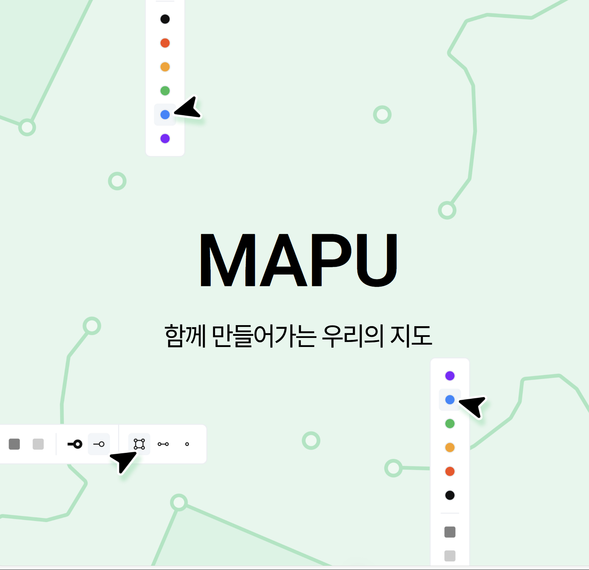

Discover
My
Signiture
Project
지금까지 진행한 개발 프로젝트를
정리한 개인 아카이브입니다.
Home

2STEP
https://github.com/leunbin/2step
BACKEND
앨리스 부트캠프 팀프로젝트로 제작한 웹 애플리케이션입니다.
트렌디한 운동화를 판매하는 온라인 쇼핑몰로 최소 기능(MVP)으로 시작해 CRUD 및 쇼핑몰의 핵심 기능을 구현했습니다.
2step 본문입니다.
YAMSPOON
https://github.com/leunbin/yamspoon
BACKEND
2step 본문입니다.
앨리스 부트캠프 팀프로젝트로 제작한 웹 애플리케이션입니다.
트렌디한 운동화를 판매하는 온라인 쇼핑몰로 최소 기능(MVP)으로 시작해 CRUD 및 쇼핑몰의 핵심 기능을 구현했습니다.